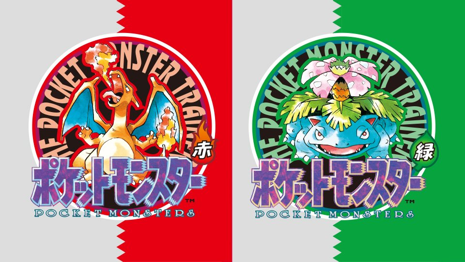

Pokedex - Generation I

Pokémon Red Version and Pokémon Green Version are the first video games in the Pokémon series.
Developed by Game Freak and published by Nintendo for the handheld Game Boy, both games were first released in Japan on February 27, 1996.
The franchise would go on to become a multi-media global phenomenon, which includes video games, television animation, films, trading card games, etc.
Pokémon is owned by Nintendo, Game Freak, and Creatures Inc.
All rights are reserved under fair use.